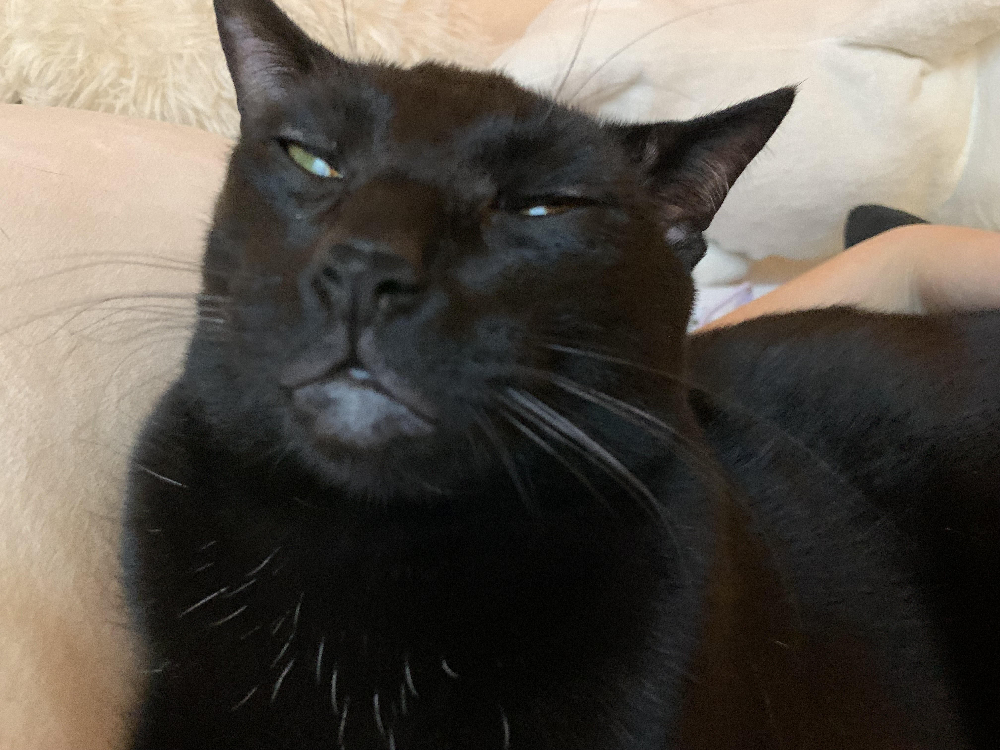

Baylin Teel

Summary
I am a hardworking individual who is dedicated to loving cats. I have plenty of experience in this area.
Education
- Bachelor of Cats, Paw-litical Science - University of Felines (2010-2014)
Work Experience
-
Nap Time Supervisor - Lazy Paws Lounge
June 2014 - May 2018
- Monitored nap times and maintained calm enviornment for maximum relaxation
- Mastered the art of sleeping in awkward positions to not disturb resting cats
Feline Nutrition specialist - Meow Meals Inc.
June 2018 - Present
- Conducted vigorous taste tests to ensure cats satisfaction with gourmet meals
- Designed balance diets to support nine lives
- Managed catnip inventory to prevent unauthorized cat parties
Skills
- Multitasking Meowstro:⭐️⭐️⭐️⭐️⭐️
- Cat Bath Administrator:⭐️
- Laser Pointer Precision:⭐️⭐️⭐️
Awards and Certifications
- Employee of the Meow-nth - Letter Box Logistics (August 2016)
Other